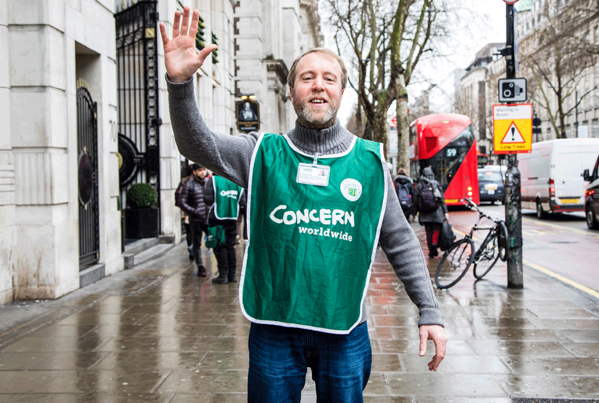
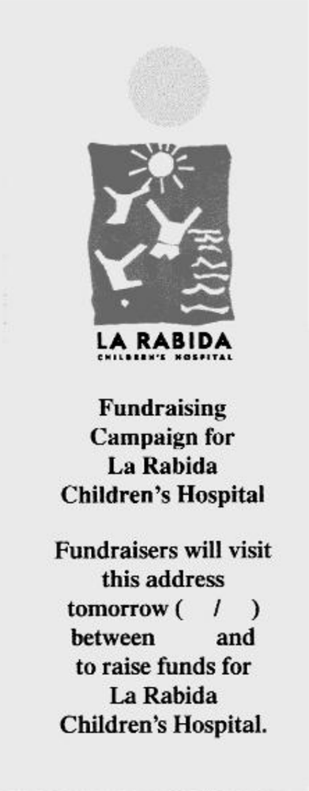
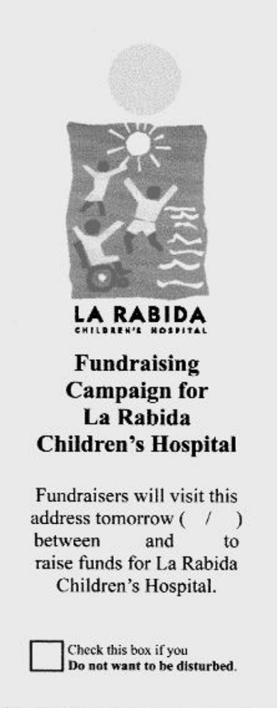
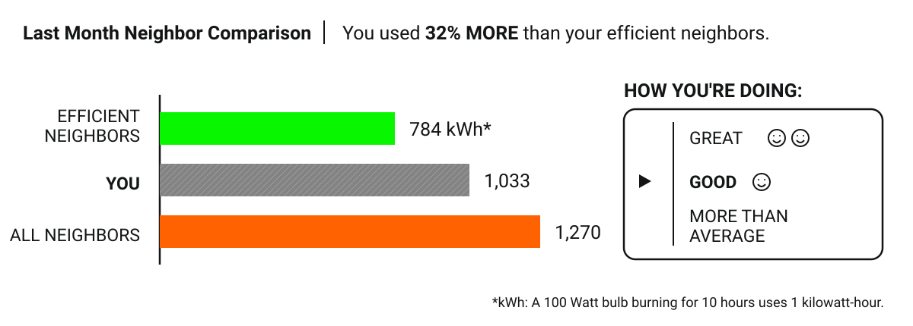
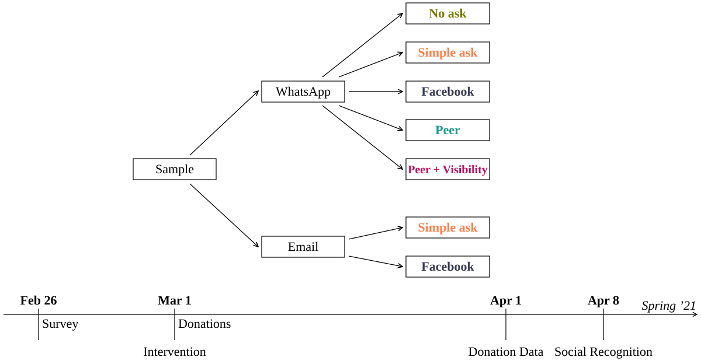
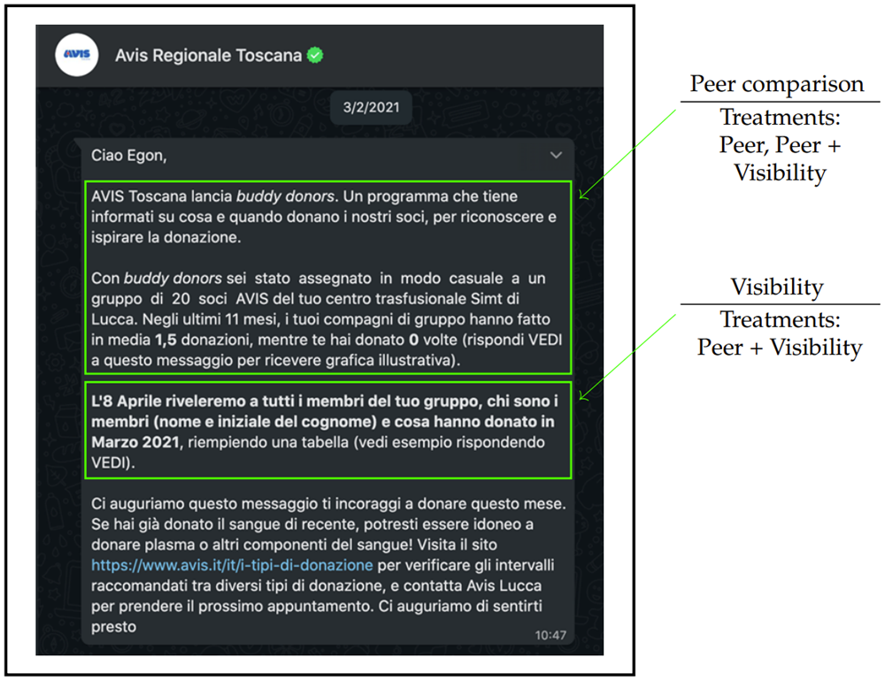
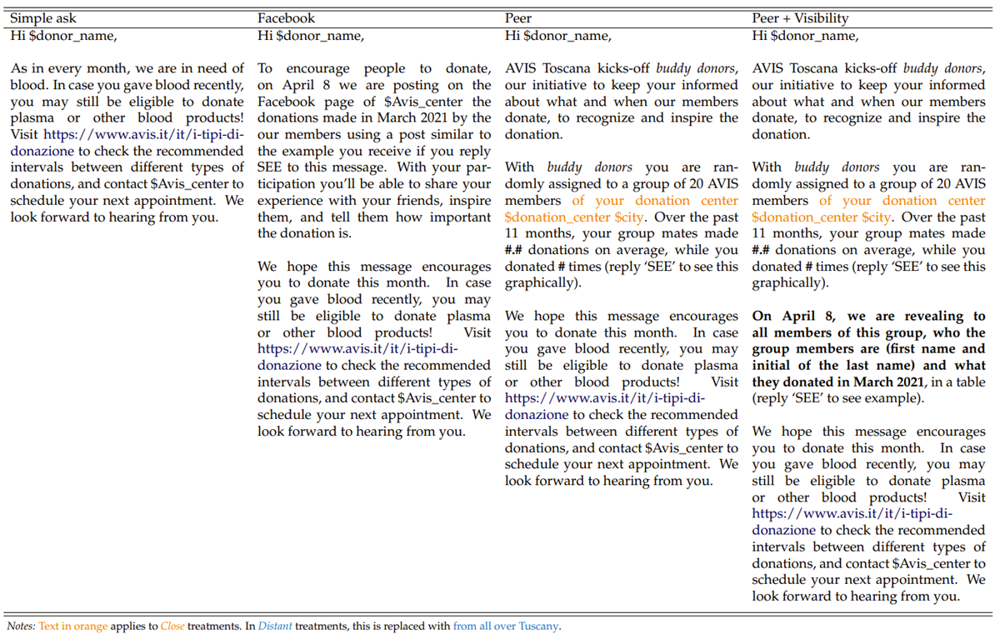
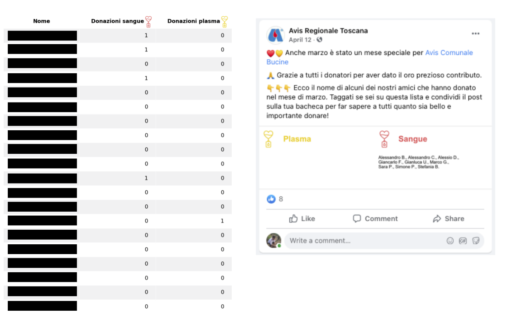

#6
November 2026

Read the paper HERE
Treatment 1: a flyer delivered one day in advance announced when the fundraiser would visit.
Treatment 2: the same flyer included an opt-out box that residents could check if they did not want to be visited.
Baseline: the fundraiser visited without advance notice.


| Visit | Cost of avoiding social pressure | |
|---|---|---|
| Baseline | Unexpected | High |
| Treatment 1 (flyer) | Expected | High |
| Treatment 2 (flyer + opt-out) | Expected | Low |
Compared with the Baseline, announcing the visit with a flyer reduced the share of households that opened the door by about 4 percentage points.
Adding the opt-out option reduced that share by a further 5-6 percentage points.
This pattern is evidence of social pressure: when households know a fundraiser is coming, they try to avoid the interaction, especially when avoidance is easy, as it is with the opt-out option.
The flyer alone has no overall effect on donation rates.
Possible explanation:
The opt-out option significantly reduces donation rates.
Possible explanation:
People frequently compare their behaviour and opinions with those of others.
These comparisons shape many decisions.
Let’s see how information policies can use social comparisons to influence energy-saving behaviour.
Allcott (2011) studied one of the best-known energy conservation programs in the United States, run by a company called OPOWER.
OPOWER mails home energy reports comparing a household’s energy use with that of similar neighbors.
Each household is compared with roughly 100 nearby homes with similar characteristics, including floor area and type of heating (gas or electric).
Read the paper HERE

It takes several months for the treatment effect on energy use to stabilize.
The effect is stronger in winter and summer, when heating and air conditioning increase energy demand.
Even after almost two years of continuous treatment, there is no evidence that the effect has faded.
There is no evidence of a boomerang effect: low-use households did not increase their energy use after the reports showed them that they used less energy than their neighbors.
Does social recognition influence behaviour?
Goette and Tripodi (2024) investigated this question through an experiment conducted with Avis Toscana.
Donors received requests by email or WhatsApp to donate blood or plasma during the following month.
The outcome of interest was the number of donations made during that month.
Read the paper HERE




In the No ask control group, 10% of participants donated blood during the study month.
The Facebook treatment, which offered public recognition for donating, increased donations by 10.6% relative to No ask.
Donation rates also increased relative to No ask when donors received information about their peers (Peer and Peer + Visibility).
Yet there was no difference between Peer and Peer + Visibility: making future donations visible to the group had no effect.
None of these forms of social recognition was more effective than a simple request (Simple ask), which increased donations by 26.6% relative to No ask.
Baseline category: No ask. Outcome variable: donated blood or plasma in March 2021.
| (3) |
(4) |
(5) |
(6) |
|
|---|---|---|---|---|
| Simple ask | 0.016** | 0.014** | 0.028*** | 0.027*** |
| (0.007) | (0.006) | (0.007) | (0.007) | |
| 0.009 | 0.010 | 0.012* | 0.012* | |
| (0.007) | (0.006) | (0.007) | (0.007) | |
| Donors’ observables | Yes | Yes | Yes | Yes |
| Local branch fixed effects | No | Yes | No | Yes |
| Observations | 13,438 | 13,438 | 12,853 | 12,853 |
| Clusters | 681 | 681 | 677 | 677 |
| R² | 0.050 | 0.056 | 0.055 | 0.064 |
| Opening rate | 17.21% | 17.21% | 90.63% | 90.63% |
| Facebook − Simple ask | −0.007 | −0.005 | −0.016 | −0.015 |
| p-value | 0.321 | 0.481 | 0.023 | 0.026 |
* \(p<0.1\); ** \(p<0.05\); *** \(p<0.01\).
Notes: Treatment effects estimated using a linear probability model, where the dependent variable indicates whether the subject donated either blood or plasma in the study period—March 2021. Simple ask and Facebook are binary treatment indicators. Donors’ observables include age groups (18-38, 39-51, 52+), gender and past donations. Standard errors in parentheses are clustered at the level of the unit of randomization. All columns estimate the model for all blood donors in treatments No ask, Simple ask and Facebook.
The difference between No ask and Facebook is not statistically significant.
Public recognition on Facebook therefore does not appear to increase donation rates significantly relative to the control group.
Question: Why?
Possible explanation #2: People may avoid activities that could make them look overly concerned with their public image.
This explanation is consistent with the results of Goette and Tripodi’s survey experiment.
Regular donors are less concerned with signaling altruism than with avoiding the impression that they are seeking attention.
Social pressure and charitable donations
People may donate because they care about a cause or enjoy the warm glow of doing something good.
They may also donate because they feel social pressure, even when they would prefer not to.
Given the choice, these people would avoid fundraisers and not donate.
DellaVigna, List, and Malmendier (2012) tested this idea in a field experiment.
Read the paper HERE